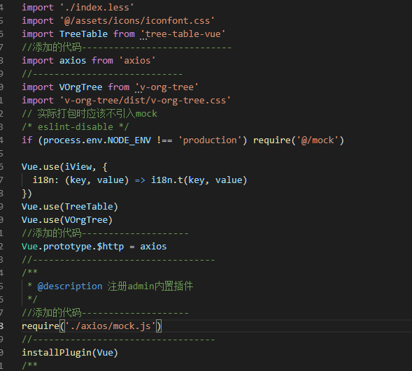
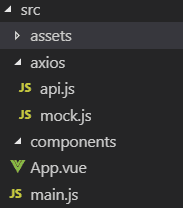
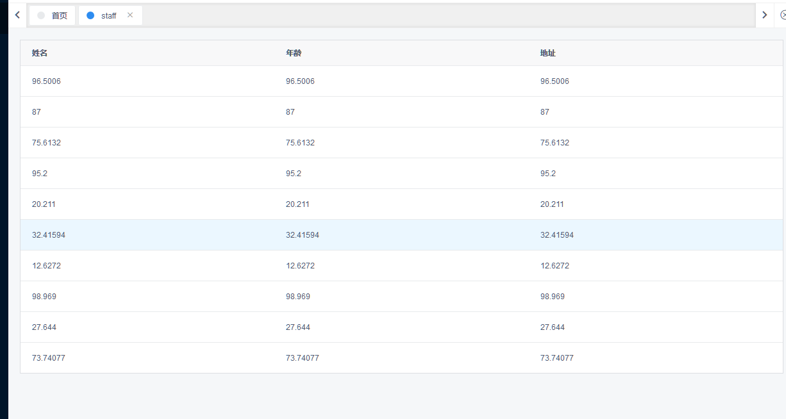

下载安装iview,
进入根目录,用命令行启动
npm install
npm run build
npm run dev
安装mock.js和axios
npm install mock.js -save
npm install axios --save
配置mock和axios
1.在main.js中引入mock.js
2.在main.js中引入axios

项目目录

api.js文件代码
import axios from 'axios'
axios.defaults.headers.post['Content-Type'] = 'application/x-www-form-urlencoded'
// 请求拦截器
axios.interceptors.request.use(function(config) {
return config;
}, function(error) {
return Promise.reject(error);
})
// 响应拦截器
axios.interceptors.response.use(function(response) {
return response;
}, function(error) {
return Promise.reject(error);
})
// 封装axios的post请求
export function fetch(url, params) {
return new Promise((resolve, reject) => {
axios.post(url, params)
.then(response => {
resolve(response.data);
})
.catch((error) => {
reject(error);
})
})
}
export default {
mockdata(url, params) {
return fetch(url, params);
}
}
mock.js
import Mock from 'mockjs' // 引入mockjs
const Random = Mock.Random // Mock.Random 是一个工具类，用于生成各种随机数据
let data = [] // 用于接受生成数据的数组
let size = [
'300x250', '250x250', '240x400', '336x280',
'180x150', '720x300', '468x60', '234x60',
'88x31', '120x90', '120x60', '120x240',
'125x125', '728x90', '160x600', '120x600',
'300x600'
] // 定义随机值
for(let i = 0; i < 10; i ++) { // 可自定义生成的个数
let template = {
'Float': Random.float(0, 100, 0, 5), // 生成0到100之间的浮点数,小数点后尾数为0到5位
'Date': Random.date(), // 生成一个随机日期,可加参数定义日期格式
'Image': Random.image(Random.size, '#02adea', 'Hello'), // Random.size表示将从size数据中任选一个数据
'Color': Random.color(), // 生成一个颜色随机值
'Paragraph':Random.paragraph(2, 5), //生成2至5个句子的文本
'Name': Random.name(), // 生成姓名
'Url': Random.url(), // 生成web地址
'Address': Random.province() // 生成地址
}
data.push(template)
}
Mock.mock('/data/index', 'post', data) // 根据数据模板生成模拟数据
App.vue
<template>
<Table :columns="columns1" :data="dataShow">
<tr>
<td></td>
</tr>
</Table>
</template>
<script>
import api from "./axios/api.js";
export default {
name: "app",
data() {
return {
columns1: [
{
title: "姓名",
key: "Float"
},
{
title: "年龄",
key: "Float"
},
{
title: "地址",
key: "Float"
}
],
dataShow: []
};
},
created() {
this.getdata();
},
methods: {
getdata() {
api.mockdata("/data/index").then(res => {
console.log(res);
this.dataShow = res;
});
}
}
};
</script>
页面

感谢 https://www.jianshu.com/p/3074a50d099a 给我的参考